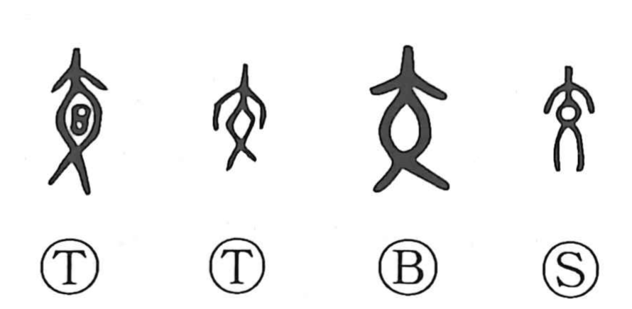

交

Kun: majiwaru, majieru, majiru, mazaru, mazeru, kau, kawasu | On: kou
to cross ・ to mix ・ to associate ・ to exchange ・ trade
Explanation
交 pictures a person seen from the front with the legs crossed. The crossing supplies the basic idea of things meeting, intersecting, or becoming intermingled.
From crossed lines or movements, the meaning extends to people associating with one another. Friendship, social relations, and communication all involve this meeting between counterparts. The same reciprocity gives exchanging things and acting in turn, one after another.
The posture was also regarded as graceful. Related 佼 and 姣 describe a fine or attractive appearance, preserving an appreciation of the person’s bearing alongside 交’s more familiar meanings of mingling and exchange.